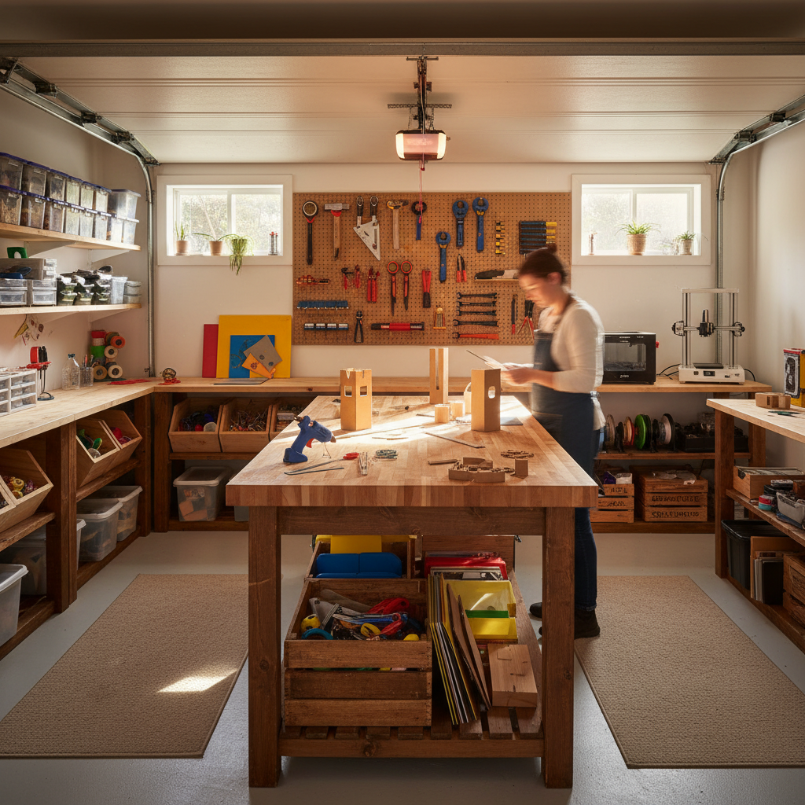
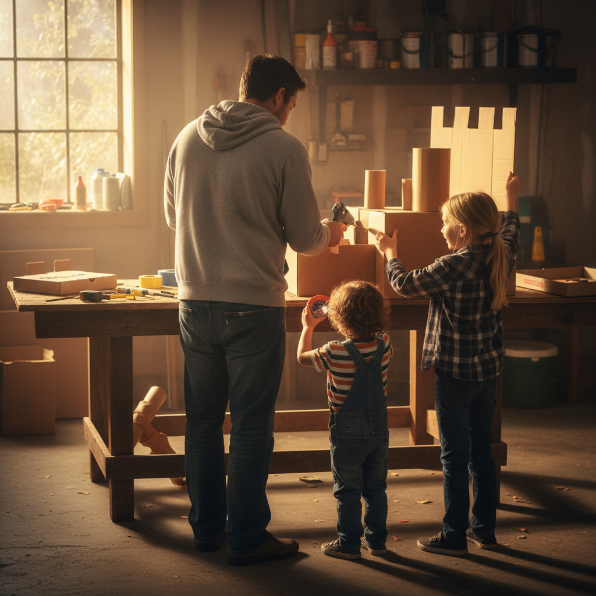
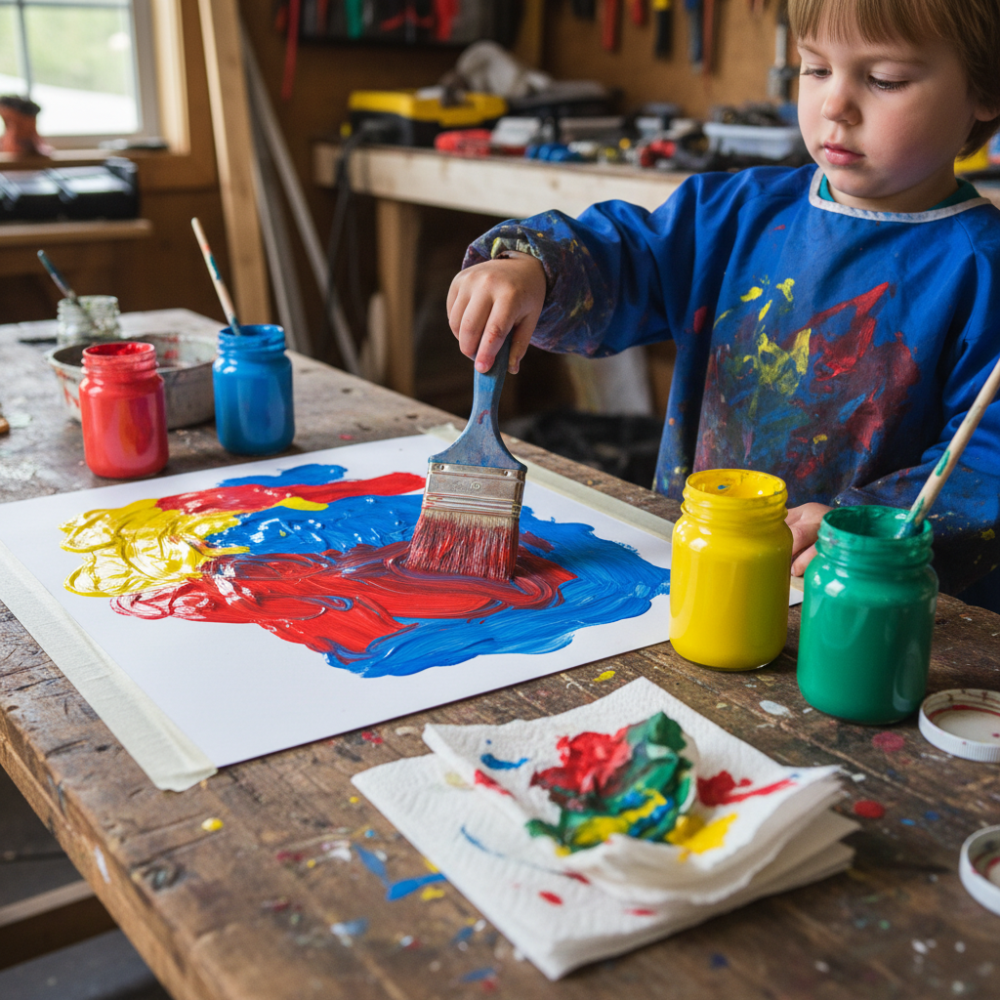
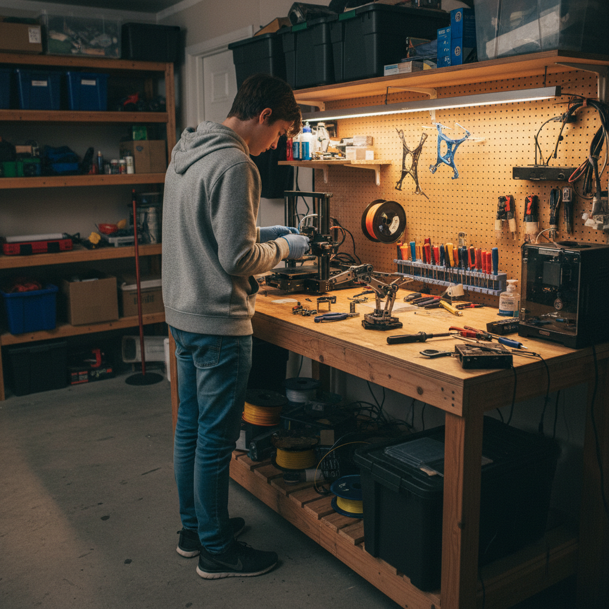

iNQshop
Build what you learn.
A hands-on workshop curriculum for homeschool families: cardboard, wood, paint, mechanisms, 3D printing, laser, CNC, notebooks, and real artifacts—scaled from early childhood to advanced study.

Choose your entry
This is not just shop class. iNQshop integrates math, science, art, history, engineering, and writing through projects that can be built, measured, explained, and displayed. It is designed for mixed ages, serious family culture, and growth from first tools to advanced fabrication.



The workshop dimension of home education
iNQshop turns subjects into artifacts. Children build geometry in cardboard, test force with wood, model ideas with paint and clay, fabricate mechanisms, keep notebooks, and learn to explain what they have made.
Observe → Make → Measure → Model → Explain → Publish → Teach
A project ladder from first tools to original work
Junior
Sorting, joining, painting, cutting, building enclosures, simple machines.
Builder
Measurement, structure, mechanisms, models, tool responsibility.
Studio
Design, woodcraft, fabrication, notebooks, prototypes, interdisciplinary projects.
Advanced
Research builds, instrument making, CAD/CAM, publication, mentoring younger students.
For the full Wonder → Faculty ladder and strand cells by age, see the reference table below.
Six strands of making
Form
Structure, geometry, shelter, architecture.
Motion
Wheels, ramps, mechanisms, machines.
Light
Shadow, color, optics, image, representation.
Matter
Materials, surfaces, paint, clay, wood, polymers.
Nature
Habitats, biomimicry, observation tools, ecological making.
Civilization
Maps, models, artifacts, historical reconstruction, book arts.
Start with a four-week sequence
A concrete first month—adjust pace to your family.
Week 1 — Shelter
Build a cardboard house or animal structure.
Week 2 — Motion
Test ramps, wheels, and moving parts.
Week 3 — Surface
Paint, color, texture, labeling, ornament.
Week 4 — Notebook + critique
Measure, sketch, explain, revise, display.
Every project ends in real work
- Artifact
- Notebook
- Measurement sheet
- Diagram
- Oral explanation
- Display
- Publication
- Teaching moment
Wonder (~2–4) might keep one photo, clip, or kept object; the list still applies—scaled to the hand.
Grow by capability, not by gadget
Cardboard + craft path
Best for early childhood and mixed ages.
Wood + mechanisms path
Best for middle grades.
Fabrication path
3D print, laser, CNC, CAD/CAM when the room and supervision match.
Studio path
Paint, modelmaking, book arts, design.
Need the room plan too?
iNQshop gives you the curriculum. Garage gives you the room, zones, storage, and implementation plans.
Start Garage Schooling with your first build.
Reference: full strand ladder (ages 2+)
Same project families at increasing depth. PreK lives in Wonder (~ages 2–4, always with a hand nearby). Engines & propulsion sit alongside the other strands.
| Strand | Wonder (PreK · ~2–4) | Seed / Apprentice | Builder / Studio | Collegium+ |
|---|---|---|---|---|
| Form & structure | Big blocks, tape collage, knock-down towers | Towers, bridges, shelters, shape hunts | Trusses, joints, load tests | Parametric structures, publishable studies |
| Motion & mechanism | Ramps, push toys, safe “marble” runs with large balls | Wheels, automata, simple linkages | Gears, cams, motorized builds | Controls, robotics synthesis |
| Engines & propulsion | Toy cars and “where push comes from”; safe distance from any running motor; listen to idle vs rev (adult holds throttle) | Rubber-band cars, balloon rockets, hand-crank generators; lawnmower off—spark plug story | Small four-stroke teardown on bench with PPE; carb/fuel/air triad; torque wrench intro; hub motor + battery basics | Efficiency estimates, staged combustion models, generator loading, emissions tradeoffs as civics |
| Light & image | Flashlight play, shadows, prism in adult hands | Pinhole, color mixing | Optics, stop-motion | Computational imaging |
| Matter & materials | Washable paint, dough, tear-and-glue; sealed sensory bottles only | Texture comparisons, clay | 3D print studies, laser settings | Materials informatics, sustainability |
| Nature & life | Tray collections, watering seedlings | Habitats, weather tools | Ecology builds, sensing | Field instruments, bio-inspired design |
| Civilization & artifact | Cardboard props, sticker maps, story stones | Masks, maps, costumes | Historical reconstructions | Public humanities installations |
Growth pathway
Same room over the years—harder projects, familiar habits.
Historical builds beside an ontogenic curriculum
Ontogeny means your learner’s path in the room; historical builds are exemplars—bridges, mills, engines—with constraints you can model at bench scale.
| Band | Exemplar | Bench companion | Defense prompt |
|---|---|---|---|
| Wonder | Shelters, post-and-lintel | Block forts, fabric spans | What shape stood? |
| Seed / Apprentice | Arch, aqueduct, crane | Foam voussoir arch, pulley hoist | Where does thrust go? |
| Builder–Studio | Steam, IC engines, truss bridges | Safe demos, teardown with PPE, load tests | What would falsify your claim? |
| Collegium+ | Electrification, systems engineering | Efficiency sketches, mission rules for robots | Who paid, who risked, what failed? |
PreK in the workshop (age 2+)
Short invitations, parallel work with an adult, cleanup as pride. Wet work on the soft side; running engines and sharp perimeter tools behind rules you do not improvise. Garage shows where those zones live in the plan.
Rhythm (~15–20 min)
- Arrive — smock, name one tool.
- One invitation — tape, brush stroke, or sort.
- Make — narrate; quit when attention drifts.
- Keep one thing — display or photo.
- Reset — “shop ready for next time.”
Capabilities (engines highlighted)
Power and thermodynamics belong in a complete technical education—paced to maturity and room layout.
| Capability band | Examples in the workshop |
|---|---|
| Engines & thermal systems | Two- and four-stroke literacy; mixture and load; cooling; safe fuel handling; compression testing; motors as paired machines |
| Mechanical power transmission | Belt vs chain; gear ratios; torque; why a clutch exists |
| Electrical power | Volts/amps/hours; fuses; controllers; wiring with strain relief |
| Measurement & honesty | Calipers, torque wrench, timing marks, predicted vs observed columns |
| Digital fabrication | CAM tied to material limits; laser with fire sense; printer maintenance |
| Wood & structures | Grain, joinery that carries load, fastener schedules |
| Wet & craft media | Color chemistry at age depth; portfolio habits |